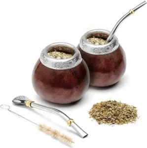
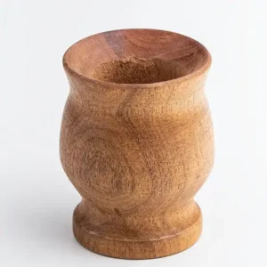
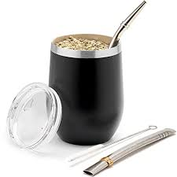
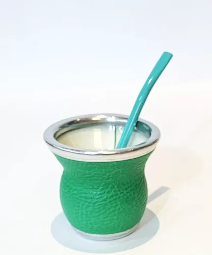

Tanto para los argentinos, como para algunos adeptos que van apareciendo por el mundo, el mate resulta un compañero indispensable en el día a día. Se ha extendido tanto su uso que hoy en día existen mates de diversos materiales como metal, vidrio, plástico, como otros materiales más orgánicos como los de madera, calabaza y hueso. Cada uno posee diferentes características, las cuales pueden influir en el sabor de esta infusión.
| Material | Descripción | |
|---|---|---|
| Calabaza | Conocidos también como mate porongo o mate poro, es uno de los más tradicionales que existen, ya que gracias a su forma redondeada y la cascara dura que la recubre en el exterior, permiten que sea un excelente recipiente para utilizarlo como mate |  |
| Madera | Los mates de madera suelen realizarse con maderas de quebracho, palo santo o roble. Cada uno influye en el sabor del mate de diferente manera, por eso mismo se suelen evitar maderas que sean demasiado aromáticas ya que podría afectar al sabor de la infusión. |  |
| Metal | Estos recipientes pueden realizarse tanto en plata como acero inoxidable. Estos mates suelen ser muy duraderos gracias a su material, resistente a golpes y caídas tanto como a la corrosión y oxido. Aunque posee una pequeña desventaja debido a que el calor del agua puede aumentar su temperatura, por lo que normalmente se lo suele implementar más para las infusiones frías como el terere. |  |
| Vidrio | Actualmente es muy común encontrar mates fundidos en vidrio, el cual en la mayoría de los casos resulta ser vidrio reciclado. Su mayor ventaja podría decirse que es que este material no influye en absoluto en el sabor de la infusión, por lo que se puede apreciar mejor el verdadero sabor de la yerba mate. |  |